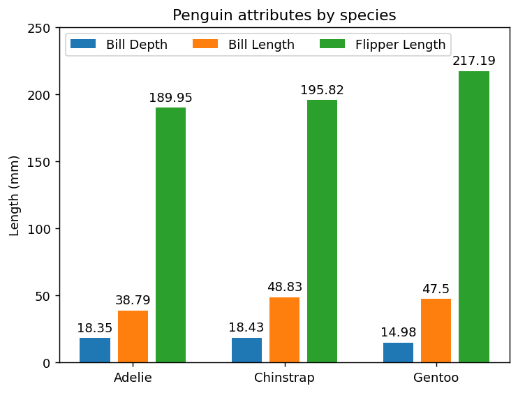
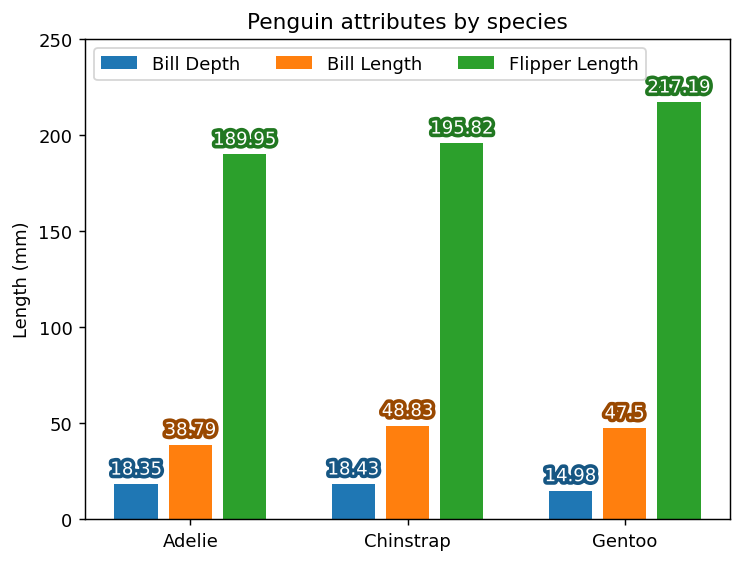
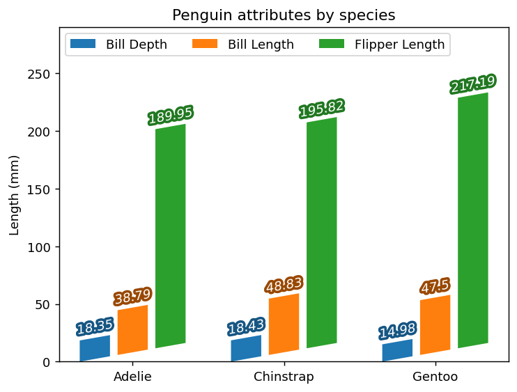
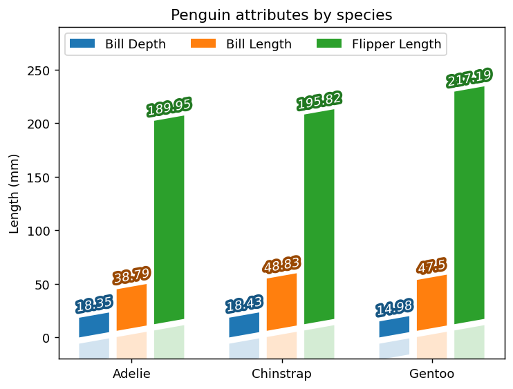
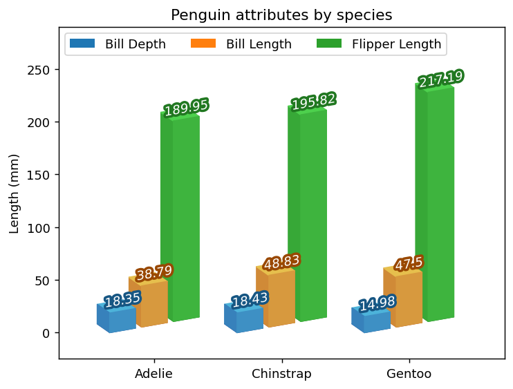
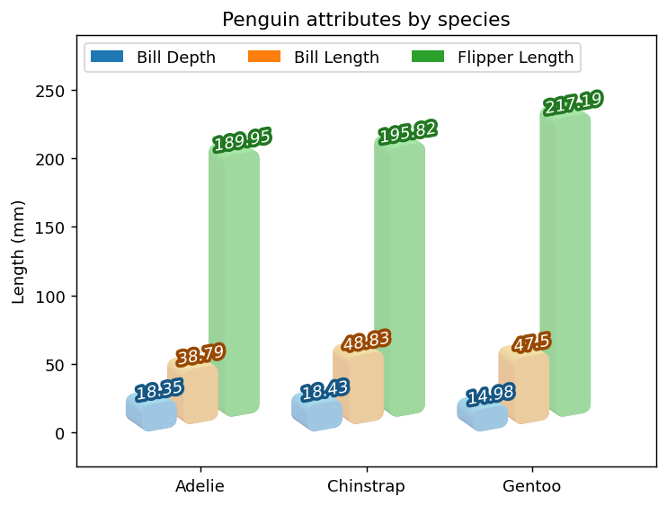
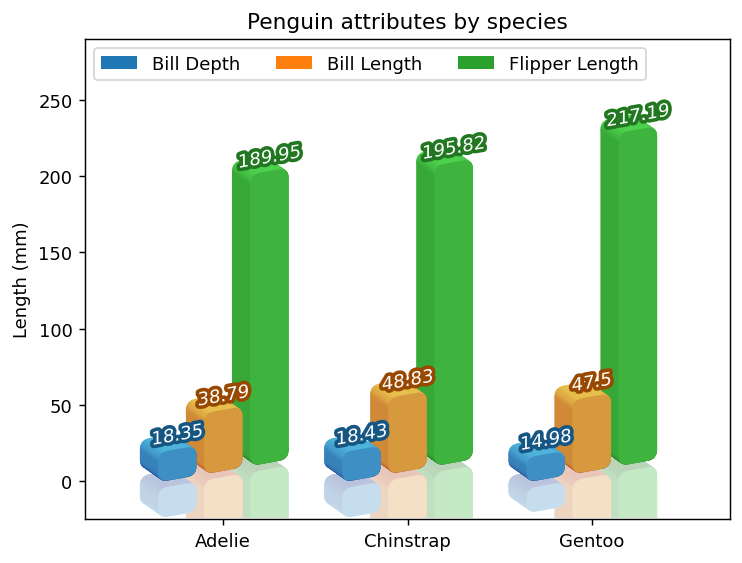
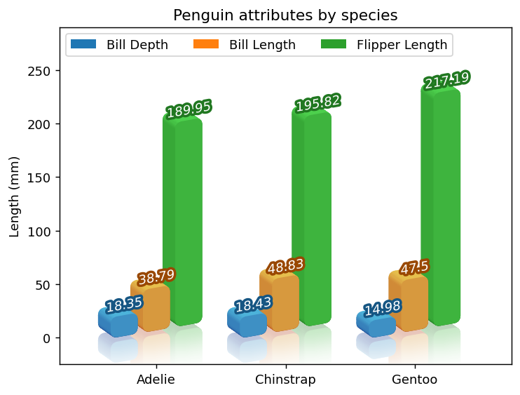

%matplotlib inlineWe start from a simple bar chart
import matplotlib.pyplot as plt
import numpy as npWe start from mpl example “Grouped bar chart with labels”. The only change we made is to increase the offset slightly so that bars are separated.
fig, ax = plt.subplots(num=1, clear=True)
species = ("Adelie", "Chinstrap", "Gentoo")
penguin_means = {
'Bill Depth': (18.35, 18.43, 14.98),
'Bill Length': (38.79, 48.83, 47.50),
'Flipper Length': (189.95, 195.82, 217.19),
}
x = np.arange(len(species)) # the label locations
n = len(penguin_means)
space_between_species = 0.3
space_between_attributes = 0.05
bar_width = (1 - space_between_species - (n-1) * space_between_attributes) / n
offset_between_attributes = np.arange(n) * (bar_width + space_between_attributes)
label_offset = (1 - space_between_species) * 0.5
for o, (attribute, measurement) in zip(offset_between_attributes,
penguin_means.items()):
rects = ax.bar(x + o + bar_width*0.5, # bar_width*0.5 is needed as the bar
# is centered at the given position.
measurement, bar_width, label=attribute)
ax.bar_label(rects, padding=3)
# Add some text for labels, title and custom x-axis tick labels, etc.
ax.set_ylabel('Length (mm)')
ax.set_title('Penguin attributes by species')
ax.set_xticks(x + label_offset, species)
ax.legend(loc='upper left', ncols=3)
ax.set_ylim(0, 250)(0.0, 250.0)
- Coloring bar labels
Let’s start with simple patheffect, to change the color of bar labels. Well add patheffects so that they have similar color to the bar themselves.
import mpl_visual_context.patheffects as pe
def colored_thick_line(c):
"patheffect to make thick outline with given color with lightness set at 0.3"
return pe.GCModify(linewidth=4) | pe.StrokeColor(c) | pe.HLSModify(l=0.3)
for p, t in zip(ax.patches, ax.texts):
t.set_path_effects([colored_thick_line(p.get_fc()), # thick outline with
# same color as the
# bar.
pe.FillColor("w") # draw the text with white fill.
])/home/jjlee/git_mpl/mpl-visual-context/mpl_visual_context/bezier_helper.py:7: UserWarning: bezier module not fount. Using bezier-lite.
warnings.warn("bezier module not fount. Using bezier-lite.")fig
- Skewed bar charts
We would like to make bars between different species, more distinguished. Let’s skew the bars, but the bars of different species have different skew origin.
# This is a simple skew. We do this using PostAffine so that the skew is done
# in the screen coordinate.
tr_skew = pe.PostAffine().skew_deg(0, 10)We want the origin of the skew, for each species, set at the lower left corner of the left most bar. This is doen by tr_recenter.
for i in range(3):
tr_recenter = pe.Recenter(ax, i, 0, coords="data")
# Thi is to set the origin of the skew, which is (i, 0) in the data
# coordinate.
skew = tr_recenter | tr_skew | tr_recenter.restore()
# Recenter changes ths coordindates, so in most cases, it should be resotred.
for p, t in zip(ax.patches[i::3], ax.texts[i::3]): # The slice is to
# select the bars (amd
# texts)in the same
# specie group.
p.set_path_effects([skew])
# bar labels are also being skewed. The skew is combined with coloring.
t.set_path_effects([skew | colored_thick_line(p.get_fc()),
skew | pe.FillColor("w")
])
# we adjust the and ylim to make a room for skewed artists.
ax.set_ylim(0, 290) 
- How about some reflection?
tr_skew = pe.PostAffine().skew_deg(0, 10)
for i in range(3):
tr_recenter = pe.Recenter(ax, i, 0, coords="data")
skew = tr_recenter | tr_skew | tr_recenter.restore()
# We want to draw reflected image. This is very similar to the skew, but we
# make the coordinates flipped in y-direction before the skew. We also like
# to offset the bar downward by 5 points.
skew_flipped = (tr_recenter | pe.PostAffine().scale(1, -1)
| tr_skew | tr_recenter.restore() | pe.Offset(0, -5))
for p, t in zip(ax.patches[i::3], ax.texts[i::3]):
p.set_path_effects([skew,
skew_flipped | pe.GCModify(alpha=0.2)])
# we flip the bar and also make it transparent.
t.set_path_effects([skew | colored_thick_line(p.get_fc()),
skew | pe.FillColor("w")
])
# Again, we adjust the ylim to better show flipped box.
ax.set_ylim(-20, 290) (-20.0, 290.0)fig
- 3D effects
# We will add 3d effects to the bars. The reflection effect won't be used for now.
from matplotlib.colors import LightSource
from mpl_poormans_3d import Poormans3d, Poormans3dFace
ls = LightSource(azdeg=170)
p3d = Poormans3d(ls, displacement=(-10, 7), fraction=0.5)
p3d_face = Poormans3dFace(ls, displacement=(0, 0), fraction=0.5)
for i in range(3):
tr_recenter = pe.Recenter(ax, i, 0, coords="data")
skew = tr_recenter | tr_skew | tr_recenter.restore()
for p, t in zip(ax.patches[i::3], ax.texts[i::3]):
p.set_path_effects([skew | p3d,
skew | p3d_face])
# we flip the bar and also make it transparent.
# t.set_path_effects([skew | colored_thick_line(p.get_fc()),
# skew | pe.FillColor("w")
# ])
# We adjust the zorder of the bars so that the left most bar in the same group
# is drwan last, so their overwrap looks natural.
for i in range(3):
for z, p in enumerate(ax.patches[i::3]):
p.set_zorder(p.get_zorder() - z*0.01)
ax.set_xlim(-0.4, 3.1)
ax.set_ylim(-25, 290) (-25.0, 290.0)fig
- make bar corners round
rc = pe.RoundCorner(5)
for i in range(3):
tr_recenter = pe.Recenter(ax, i, 0, coords="data")
skew = tr_recenter | tr_skew | tr_recenter.restore()
for p, t in zip(ax.patches[i::3], ax.texts[i::3]):
p.set_path_effects([skew | rc | p3d,
skew | rc | p3d_face])fig- Reflection with 3d effects : attemp 1
We would like to add reflection effects to the bars in 3d. Unfortunately this is not simply doe by adjusting alpha. The 3d effects are done by draing may rectangles with different colors, partly overwrapping. And overwrapping regions will become more opaque than other regions.
One way to overcome this to use image-clipboard to capture the bars with 3d effects, and apply the alpha in the image plane.
from mpl_visual_context.patheffects_image_effect import ImageClipboard
import mpl_visual_context.image_effect as ie
ic = ImageClipboard()
for i in range(3):
tr_recenter = pe.Recenter(ax, i, 0, coords="data")
skew = tr_recenter | tr_skew | tr_recenter.restore()
for p in ax.patches[i::3]:
p.set_path_effects([skew | rc | p3d | ic.copy(),
# copy will draw the artist in the clipboard, but
# not on the screen.
skew | rc | p3d_face | ic.copy(),
ic.paste(ie.AlphaAxb((0.5, 0)))
# paste will draw the clipboard image on the
# screen, optionally aplly image-effects.
])fig- Reflection with 3d effects : attemp 2
The above approch works to some degree, but can be improved. In the above approach, the clipboard is copied and pasted for each bar. We will collcet all the bars in the clipboard and get pasted later.
from mpl_visual_context.patheffects_image_effect import ClipboardPasteArtist
ic = ImageClipboard()
for i in range(3):
tr_recenter = pe.Recenter(ax, i, 0, coords="data")
skew = tr_recenter | tr_skew | tr_recenter.restore()
for p in ax.patches[i::3]:
p.set_path_effects([skew | rc | p3d | ic.copy(),
skew | rc | p3d_face | ic.copy(),
])
# without past, nothing will be drawn on screent at this stage.
a = ClipboardPasteArtist(ic, ie.AlphaAxb((0.5, 0)))
a.set_zorder(1.5) # we need to make sure that this is drawn after the bars
# (i.e., they should have copied to the clipboard before
# getting pasted.)
ax.add_artist(a) <mpl_visual_context.patheffects_image_effect.ClipboardPasteArtist at 0x7f73c0dc0880>fig
- Reflection with 3d effects : attemp 3
# First we remove clipboard_paste_artists that is added previously.
for a in ax.artists: a.remove()We repeat above attempt, but for the flipped bars. Actually, we will use ArtistListWithPE (at zorder of 0.5) to capture the flipped image, ClipboardPasteArtist (at zorder 0.7) to paste, and draw the bars (zorder of 1).
from mpl_visual_context.artist_helper import ArtistListWithPE
ic_flipped = ImageClipboard()
for i in range(3):
tr_recenter = pe.Recenter(ax, i, 0, coords="data")
skew = tr_recenter | tr_skew | tr_recenter.restore()
skew_flipped = (tr_recenter | pe.PostAffine().scale(1, -1)
| tr_skew | tr_recenter.restore() | pe.Offset(0, -5))
pe_flipped = [
rc | skew_flipped | p3d | ic_flipped.copy(),
rc | skew_flipped | p3d_face | ic_flipped.copy()
]
a_flipped = ArtistListWithPE(ax.patches[i::3], pe_flipped)
a_flipped.set_zorder(0.5)
ax.add_artist(a_flipped)
# The original bars will be drawn with 3d effects.
for p in ax.patches[i::3]:
p.set_path_effects([skew | rc | p3d,
skew | rc | p3d_face,
])
a = ClipboardPasteArtist(ic_flipped, ie.AlphaAxb((0.3, 0)))
a.set_zorder(0.7)
ax.add_artist(a) <mpl_visual_context.patheffects_image_effect.ClipboardPasteArtist at 0x7f73c0d86ce0>fig
- Reflection with 3d effects : attemp 4
for a in ax.artists: a.remove()Refelction artist is similar to ClipboardPasteArtist, but is specialized to draw refelection images which fades out away from the original image. This requires two clipboard, one for reflected, the other for the original.
from mpl_visual_context.patheffects_image_effect import ReflectionArtist
ic= ImageClipboard()
ic_flipped = ImageClipboard()
for i in range(3):
tr_recenter = pe.Recenter(ax, i, 0, coords="data")
skew = tr_recenter | tr_skew | tr_recenter.restore()
skew_flipped = (tr_recenter | pe.PostAffine().scale(1, -1)
| tr_skew | tr_recenter.restore() | pe.Offset(0, -5))
pe_reflection = [
rc | skew_flipped | p3d | ic_flipped.copy(),
rc | skew_flipped | p3d_face | ic_flipped.copy(),
rc | skew | p3d | ic.copy(),
rc | skew | p3d_face | ic.copy()
]
a_flipped = ArtistListWithPE(ax.patches[i::3], pe_reflection)
a_flipped.set_zorder(0.5)
ax.add_artist(a_flipped) # note again that this won't draw anything on the
# screen, only in the clipboard.
# We draw the original bars will be drawn with 3d effects. For the agg
# backend, we may past the content of the ic. But for pdf backend, this may
# be better as it produces vector output.
for p in ax.patches[i::3]:
p.set_path_effects([skew | rc | p3d,
skew | rc | p3d_face,
])
a = ReflectionArtist(ic_flipped, clipboard_alpha=ic,
alpha_dist_sigma=20, # image will become transparent about
# 20 points away from the originl
# imge.
clear_alpha=True # make sure that clipboard_alpha is cleared after use.
)
a.set_zorder(0.7)
ax.add_artist(a) <mpl_visual_context.patheffects_image_effect.ReflectionArtist at 0x7f73c2b50670>fig
fig.savefig("skewed_barplots_with_reflection.jpg")